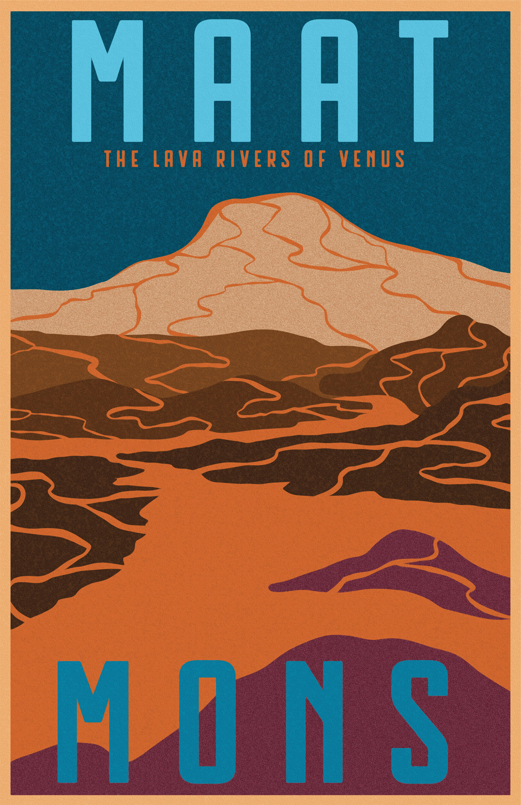

Maya Enfinger, Maat Mons, 2026, Digital Art
This poster was made for an assignment in my Graphic Design 1 class. We had to make a poster to advertise a space destination. The project was to be inspired by NASA JPL posters. For this poster, I was inspired by WPA National Park Posters for simple, flat colors with landscape heavy focus and bold type. I was inspired on Hawaiian Volcano Posters as well. I also took reference from NASA renderings of Maat Mons to create this poster.